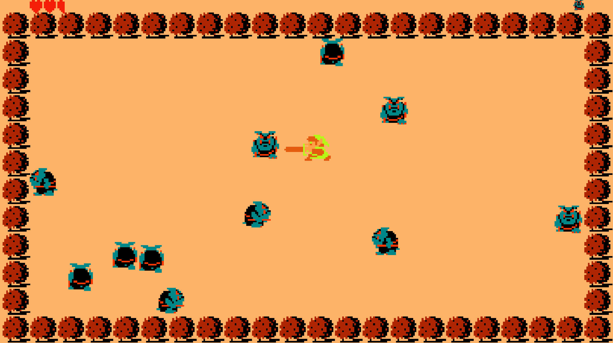

-

Blind
A 2D role-playing game, made using the Unity game engine and coded in C#. The game is unique in that, rather than giving the user numbers and statistics, it gives written descriptions of health, damage, etc. I have been working on Blind as part of a team comprising of Kevin Xing, Shan Phylim, and myself (with some additional help from Aditya Jayaprakash). Blind is an ongoing project and has taught me a lot about teamwork and project management.
-
LooHarmony
A program designed to be used for customer information management. LooHarmony reads from a file of customer data, stores the data in an array of Customer objects, allows the user to view and update info for any customer they chose, and writes the updated info back to the file in order to save the changes. This project was created in collaboration with Peter Milner and Tony Wu. I first learned about version control with GitHub while working on LooHarmony, and also learned many important OOP techniques.
-

MyZelda
My own personal take on The Legend of Zelda, a classic Nintendo video game. As with my other video game project, MyZelda was developed in Unity and coded in C#. This project marked my first time coding in C# as well as my first time using Git on command-line for version control. Despite being a little unpolished in its final form, MyZelda was a great learning experience, teaching me many skills that I have used in all of my subsequent projects.
-
Personal website
If you're reading this, you must have already gotten a glimpse of what this project is about! My personal website is a work in progress and is meant to showcase some of my projects, along with my resume and some contact information. It is currently written only in HTML and CSS (with some help from Bootstrap), and is my first real attempt at web development. I hope to add a lot more to this website in the future (such as interactive features, once I learn JavaScript).